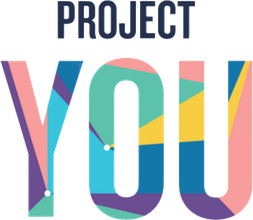

To Do ListTodaysA Level-1 data flow diagram: how a thought or a signal enters the operating system, how Claude routes it, where it is stored, and how it comes back to you as something useful. This is the moving-parts view that sits under the systems map.
Follow any thought top to bottom. You are the main source. A thought, a voice memo, a decision, all enter at Claude, the air traffic controller. Calendars and community mining feed the controller too; your apps push activity straight into the Quantified Self log; the AI-inspiration inbox feeds the AI Deck pool.
The controller sorts, it does not store. Every arrow out of Claude is a routing decision: do it now, file the raw thought to the inbox, drop a phrase into Clever Phrases, add a source to the AI pool, save a note, or record a session answer. When it is unsure, the only arrow back to you is a single clarifying question.
The database is one store, many tables. Everything lives in the Supabase project, which is what makes this an operating system and not a pile of apps. Ticking a habit auto-writes a row to the master log with no re-entry; the Atomic Habits engine quietly shapes which habits exist and how routing coaches you.
Then it comes back to you. The generator composes each day's card sets, the dashboards read the master log, and the daily rhythm reads across your todos, the master log, and the inbox to hand you a morning brief and an end-of-day wrap. The surfaces you touch feed right back into the controller (the dotted arrows), so using the system is also how it learns what to route next.